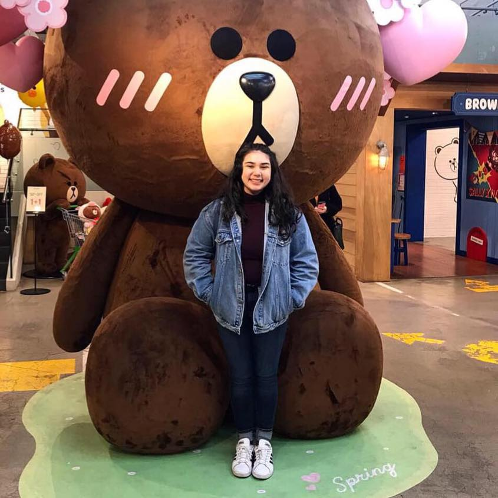
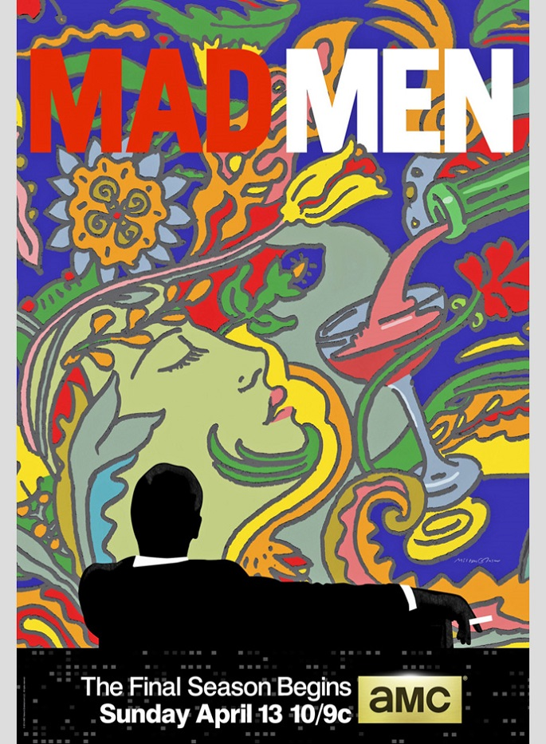
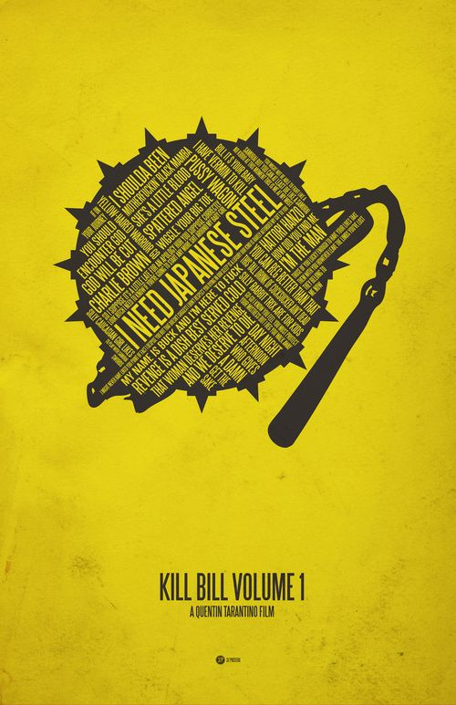

Brianna Parker
Graphic Designer
Brianna started her design career in Portland, Oregan; where she was born and raised. She eventually went to The Art Institute of Portland and recieved her BFA in Graphic Design. She has been with our company for 5 years! Brianna has designed logos varying from food and beverages to tv shows (such as The Walking Dead.)
Cat Budinger
Graphic Designer | Illustrator
Cat began her career by working with the famous Paula Scher on the famous Citi Bank logo, while attending NYU for her BFA in Graphic Design and Illustration. She has since designed and illustrated "Mad Men" advertisement. Cat loves to travel and recently spent time in Japan to further her design portfolio.
Tyler Felder
Typographer
Tyler knew that he always loved typography, but it wasn't until he saw what an original letterpress could do that he thought he could make a career out of it. He started by working at Sagmeister &Walsh, while working part time at a local letterpress studio. Tyler loves to create beautiful works of art using the letterpress for small town businesses, along with creating the typography oriented poster for "Kill Bill Volume 1."
{kind=link}